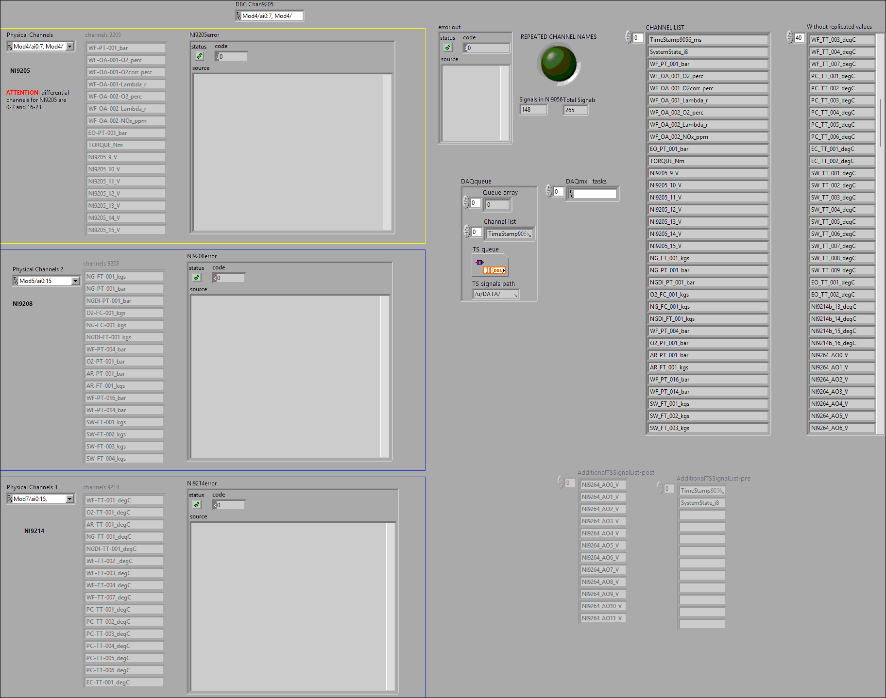
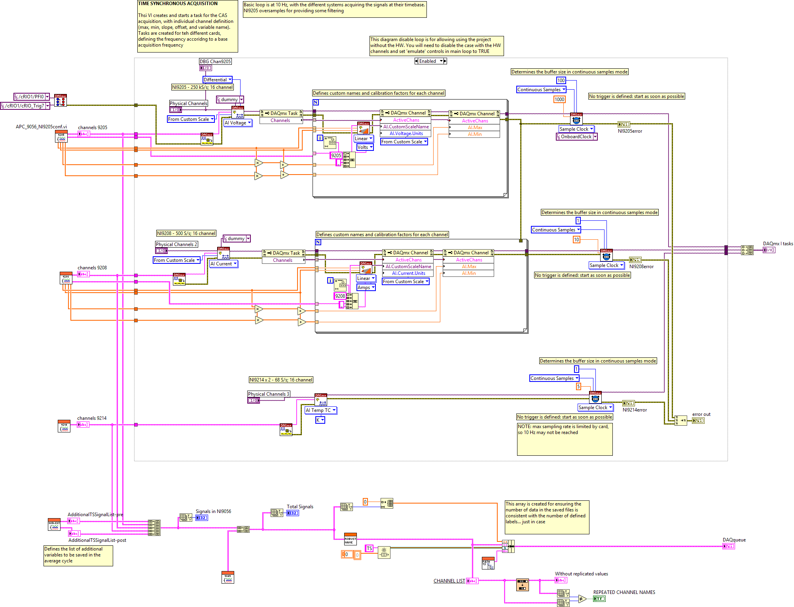
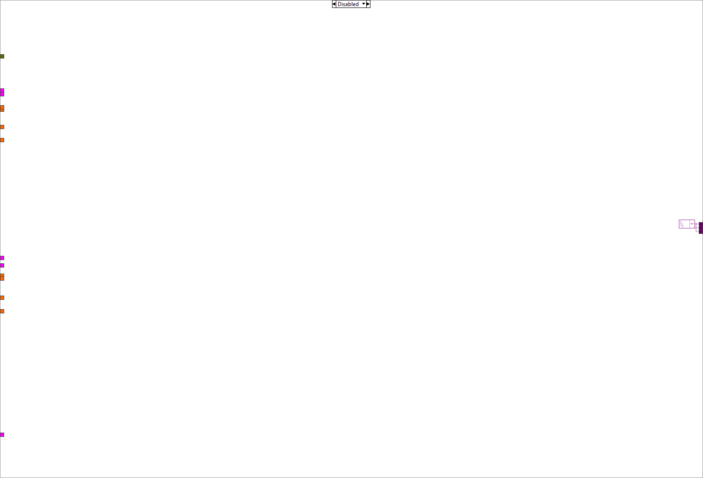

This example demonstrates the procedure required to apply different NI-DAQmx Custom Scales to each virtual channel in a task. A DAQmx Task Property Node (Functions >> NI Measurements >> DAQmx - Data Acquisition >> DAQmx Advanced Task Options) is used to obtain the task's virtual channels. A DAQmx Channel Property Node (Functions >> NI Measurements >> DAQmx - Data Acquisition) is then used to set the custom scale for each virtual channel in the task.
The "DAQmx Create Scale" VI creates a custom scale for each channel in the channel list. *Note, make sure your Minimum and Maximum channel parameters are consistent with the range the scale will create.


